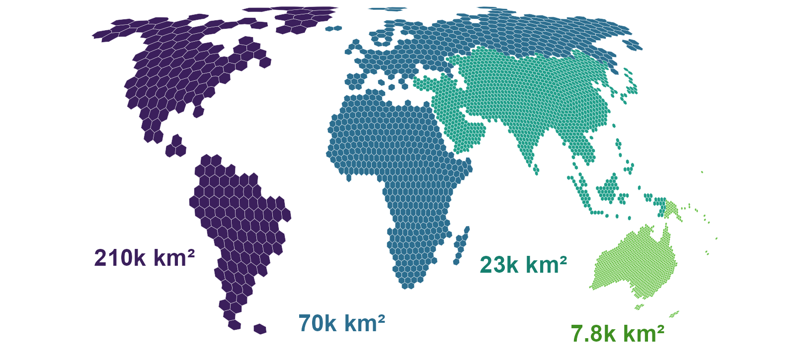

equal-area hexagons covering the globe

hexify assigns points on the globe to the cells of a hexagonal grid in which every cell has the same area, such as species records counted in cells of about 8,000 km² each, from the equator to the poles.
Rectangular latitude-longitude grids shrink towards the poles: a 1° cell at 60°N has half the area of a 1° cell at the equator, so a count per cell mixes what was found with how large the cell is. hexify builds its grids on the Icosahedral Snyder Equal Area (ISEA) projection (Snyder 1992), the discrete global grid system of Sahr, White and Kimerling (2003) that dggridR also provides, and computes it in C++ with no external libraries. A grid is set by its cell area or its resolution, and each point receives the ID of the cell that contains it. You can then count, summarise and map your data per cell, and choose the cell size that suits your analysis.
hexify supports:
-
Equal-area grids at any cell size. ISEA grids take apertures 3, 4 and 7 in any sequence up to resolution 30, and the Hex9 grid on the octahedron (Griffin 2026).
hex_grid()picks the resolution whose cell area is closest to the area you ask for. -
H3 grids. The bundled H3 v4.4.1 C library builds H3 grids with no extra installation, and
h3_crosswalk()maps cells between H3 and ISEA grids. - Cell polygons for any region. Grids come as sf polygons over a bounding box, the whole globe or the outline of a country, ready for mapping and spatial joins.
-
Other planets and moons.
radius_km = "mars"sizes a grid on Mars, and the Moon, Titan or a sphere of any radius work the same way, on both backends.
The ISEA projection and cell numbering follow dggridR. The test suite compares hexify’s cell IDs, icosahedron faces and projected coordinates with reference tables generated by dggridR at aperture 3, and as_dggrid() and from_dggrid() convert grid specifications between the two packages. A methods section can cite Snyder (1992) for the projection, Sahr, White and Kimerling (2003) for the grid system and hexify for the implementation.
Installation
Install the released version from CRAN. Windows and macOS get a binary that needs no build tools:
install.packages("hexify")The development version compiles C++ and C code. Install the build tools for your operating system first:
| Operating system | Build tools |
|---|---|
| Windows | Rtools matching your R version |
| macOS | Run xcode-select --install in Terminal |
| Debian / Ubuntu | Install r-base-dev
|
Check that R can find the compiler:
pkgbuild::has_build_tools(debug = TRUE)Then install hexify from GitHub:
# install.packages("pak")
pak::pak("gcol33/hexify")The H3 library ships as C source inside the package and compiles with it, using the C99 compiler that the build tools above provide, so no system H3 library is needed.
Usage
- Assign points to cells with
hexify(), giving the cell area in km². - Build one grid with
hex_grid()to reuse it across tables, and summarise per cell. - Turn the cells into polygons with
cell_to_sf()to map them or join them to other layers.
The input is a data frame with longitude and latitude in decimal degrees (WGS84), in columns named lon and lat unless the lon and lat arguments name others. An sf object works in any coordinate reference system, which hexify transforms itself.
library(hexify)
cities <- data.frame(
city = c("Vienna", "Paris", "Madrid"),
lon = c(16.37, 2.35, -3.70),
lat = c(48.21, 48.86, 40.42)
)
cells <- hexify(cities, area_km2 = 10000)
out <- as.data.frame(cells)
out[, c("city", "cell_id", "cell_area_km2")]
#> city cell_id cell_area_km2
#> 1 Vienna 14092 7774.205
#> 2 Paris 13272 7774.205
#> 3 Madrid 13260 7774.205Each row receives the ID of its cell and the cell area, and the result also holds the cell centre and diagonal. The grid uses the resolution whose cell area is closest to area_km2, here 7,774 km².
A grid built once with hex_grid() gives the same cell IDs for every table assigned to it, so counts from different datasets can be joined by cell_id:
grid <- hex_grid(area_km2 = 20000)
set.seed(1)
occ <- data.frame(
species = sample(c("Sp A", "Sp B", "Sp C"), 1000, replace = TRUE),
lon = runif(1000, -10, 30),
lat = runif(1000, 35, 60)
)
occ_hex <- hexify(occ, grid = grid)
occ_df <- as.data.frame(occ_hex)
counts <- aggregate(species ~ cell_id, data = occ_df, FUN = length)
names(counts)[2] <- "n_records"
head(counts)
#> cell_id n_records
#> 1 1 3
#> 2 55 4
#> 3 136 3
#> 4 2211 1
#> 5 2212 3
#> 6 2213 4cell_to_sf() returns the polygons of these cells as an sf object, to which the counts join by cell_id:
polys <- cell_to_sf(counts$cell_id, grid)
polys <- merge(polys, counts, by = "cell_id")
plot(polys["n_records"])Grids over a region
grid_rect() covers a bounding box with cell polygons, grid_global() covers the whole globe, and grid_clip() keeps the cells inside a boundary such as a country outline from rnaturalearth:
grid <- hex_grid(area_km2 = 50000)
europe <- grid_rect(c(-10, 35, 40, 70), grid)
france <- rnaturalearth::ne_countries(country = "France", returnclass = "sf")
france_grid <- grid_clip(france, grid)Practical Workflows covers shared grids across datasets, choosing a resolution and export to GIS, and Visualization builds maps with base R and ggplot2.
H3 grids
hex_grid(resolution = 8, type = "h3") builds an H3 grid, which hexify(), grid_rect() and grid_clip() take in place of an ISEA grid. H3 has a fixed aperture of 7 and a maximum resolution of 15, with cells of about 0.9 m².
H3 cells are not equal-area. Hexagon area varies by about a factor of 2 within a resolution, and by about 2.4 once the twelve pentagons are counted. The variation follows position on the icosahedron rather than latitude, with the smallest cells near face centres. Use ISEA where equal area matters, and cell_area() to read the area of a given H3 cell. H3 Grid Support works through H3 grids, their hierarchy and the crosswalk to ISEA.
Why equal-area hexagons
Hexagonal grids on the ISEA projection bring three properties to spatial binning:
- Every cell covers the same surface area from equator to pole, because hexify places the cells with Snyder’s equal-area projection.
- All six neighbours of a cell share an edge and sit at the same distance from its centre, so neighbourhood statistics carry no directional bias.
- The hexagonal tiling has the smallest perimeter per unit area among partitions of a plane into equal areas (Hales 2001), which keeps edge effects small.
Any hexagonal tiling of a sphere needs exactly 12 pentagonal cells, at the vertices of the icosahedron. These cells have 5 neighbours instead of 6, and is_pentagon() finds them. Mathematical Foundations derives the projection, the aperture sequences and the cell indexing.
Documentation
Start with Quick Start: points assigned to cells, counted per cell and mapped.
- Practical Workflows: shared grids across datasets, cell polygons, choosing a resolution and export to GIS.
-
Visualization: maps with base R
plot(),hexify_heatmap()and ggplot2. -
Interactive Globe: a grid on a globe that turns under the mouse, drawn with
hex_globe(). - H3 Grid Support: H3 grids, their hierarchy and the crosswalk to ISEA.
- Mathematical Foundations: the Snyder projection, aperture quantization and cell indexing.
- Lambert’s Construction of Snyder’s Projection: the projection of one icosahedron face, followed step by step.
- OGC Topic 21 Conformance: hexify against each requirement of the OGC standard for discrete global grid systems.
- Full reference: every function, grouped by job.
Getting help
Questions and bug reports go to the GitHub issues. A bug report is easiest to act on with a small reproducible example, for instance made with reprex.
Support
“Software is like sex: it’s better when it’s free.” — Linus Torvalds
I’m a PhD student who builds R packages in my free time because I believe good tools should be free and open. I started these projects for my own work and figured others might find them useful too.
If this package saved you some time, buying me a coffee is a nice way to say thanks. It helps with my coffee addiction.
Acknowledgements
The H3 grids run on the H3 C library by Uber Technologies, bundled in src/h3. The Hex9 address tables come from libhex9 by Ben Griffin. The reference tables that the ISEA tests compare against were generated with dggridR.
License
hexify is licensed under MIT. The bundled H3 library and the Hex9 address tables are licensed under Apache-2.0; inst/COPYRIGHTS lists the files and their sources.
Citation
Colling G (2026). _hexify: Equal-Area Hex Grids on the Snyder ISEA
Icosahedron_. doi:10.32614/CRAN.package.hexify
<https://doi.org/10.32614/CRAN.package.hexify>. R package version
0.9.0, <https://gillescolling.com/hexify/>.BibTeX: